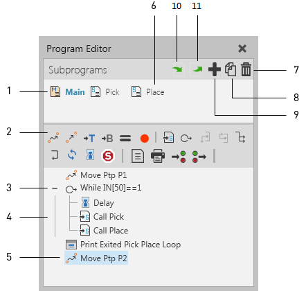
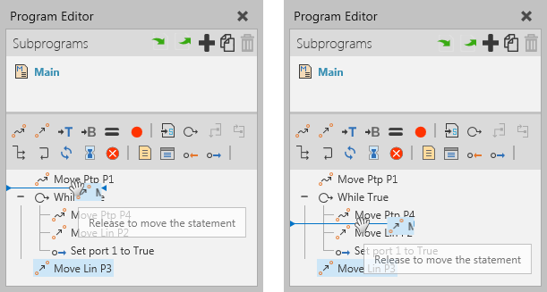
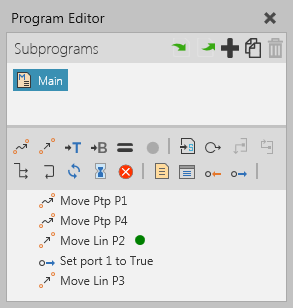

The Program Editor panel allows you to view and edit a robot program, preview motions and program other types of components using RSL statements.

| 1. | Main Routine |
| 2. | Statements Toolbar |
| 3. | Conditional Statement |
| 4. | Nested Statement |
| 5. | Motion Type Statement |
| 6. | Subroutine |
| 7. | Delete Selected Routine |
| 8. | Duplicate Selected Routine |
| 9. | Add Subroutine |
| 10. | Import Program |
| 11. | Export Program |
Contents Hide
The Statements toolbar displays commands for adding RSL statements to the program of a selected robot in the 3D world.
| Name | Description |
| Break | Ends the execution of loop. |
| Call Sequence | Executes a specified subroutine in program. |
| Comment | Leaves a comment in program. |
| Continue | Sets loop to continue from next iteration. |
| Define Base | Sets the properties of a base frame in robot. |
| Define Tool | Sets the properties of a tool frame in robot. |
| Delay | Delays the execution of program. |
| Halt | Stops the execution of program. |
| If | Defines an if-then-else condition for executing one group of statements if the condition is True or another group of statements if the condition is False. |
| Joint Motion | Executes a point-to-point motion to a position by interpolating joint values. |
| Linear Motion | Executes a linear motion to a position based on current configuration. |
| Sends feedback to be printed in the Output panel. | |
| Program Synchronize | Synchronizes program execution with other programmable components using a matching sync message. |
| Return | Ends the execution of routine. |
| Set Binary Output | Sets the value of a digital signal connected to a robot output or signals an action in the robot. |
| Touch-up | Updates the properties of a motion statement for a selected robot position. |
| Wait for Binary Input | Waits for a digital signal connected to a robot input to reach a specific value. |
| While | Defines a condition for executing a group of statements in a loop. |
The program of a robot is its job and is saved with the robot in a layout. If you need to rearrange statements in a program, drag and drop a statement before or after another statement. The place where you are inserting a statement is shown by a line that will also indicate at what level you are inserting a statement.

When running a simulation, the current statement being executed in a robot program is indicated by an arrow in the right-side of the Program Editor panel.
